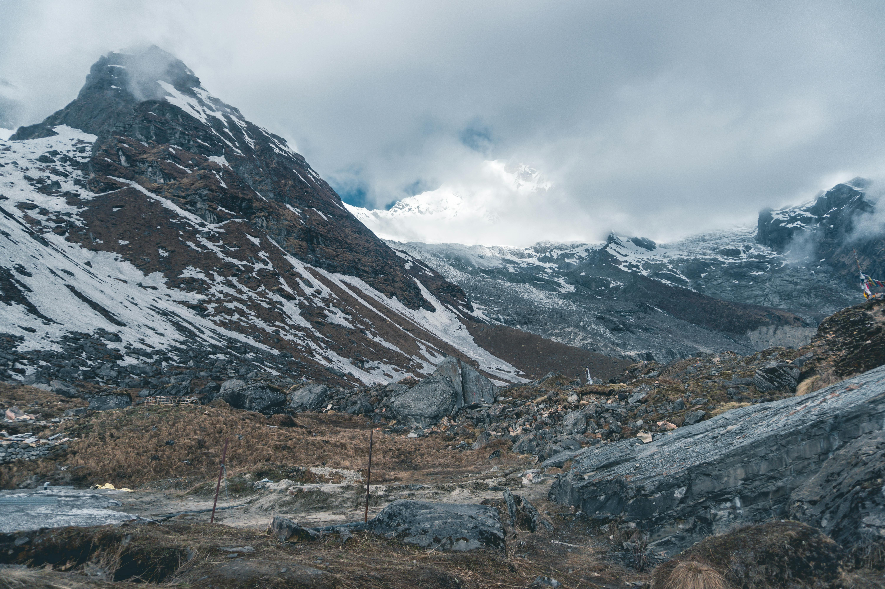
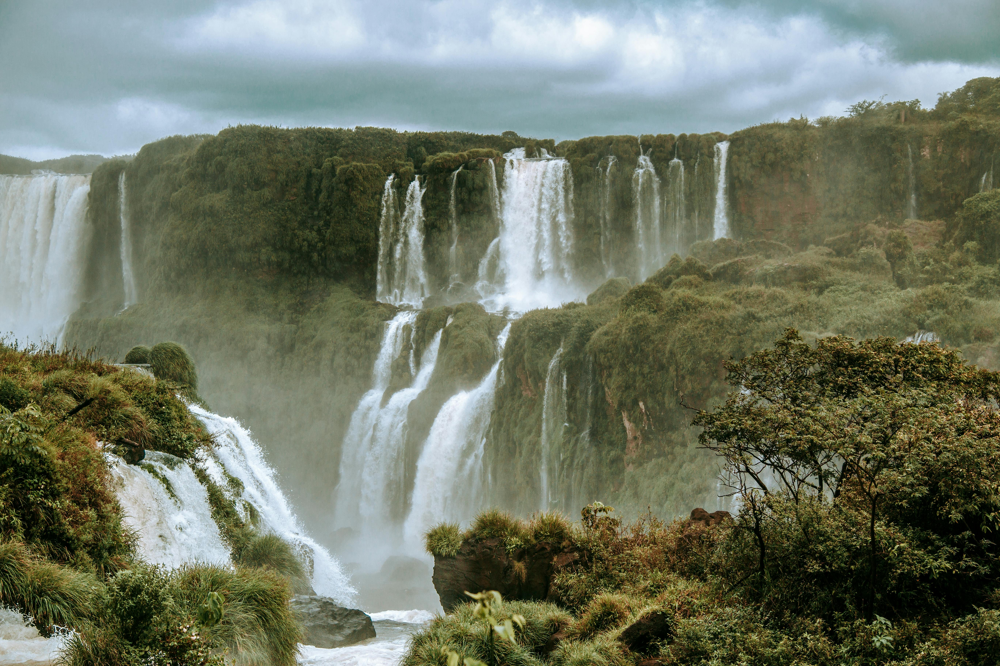
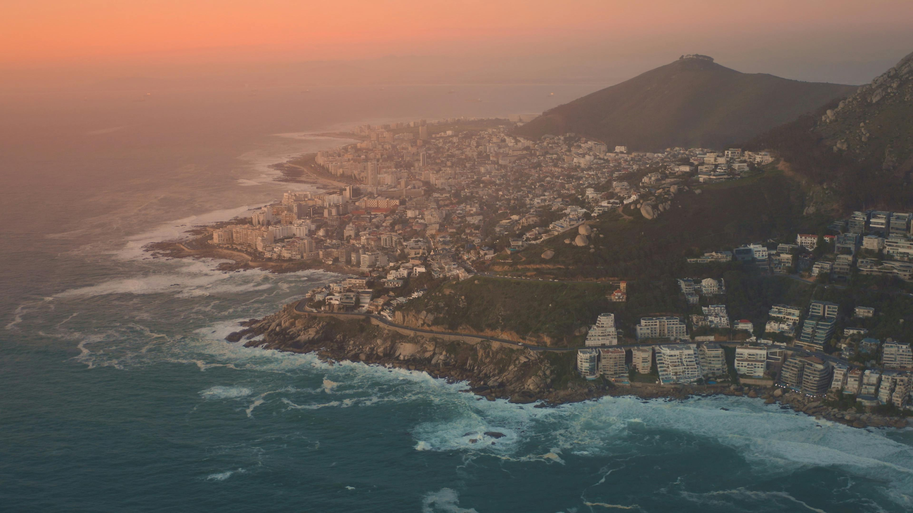

Mount Everest
Mount Everest, the highest mountain in the world, stands at 8,848.86 meters (29,031.7 feet) above sea level and is part of the Himalayan range, straddling the border between Nepal and the Tibet Autonomous Region of China. Known locally as "Chomolungma" in Tibet and "Sagarmatha" in Nepal, Everest was first successfully summited by Sir Edmund Hillary of New Zealand and Tenzing Norgay, a Sherpa of Nepal, on May 29, 1953. The mountain poses extreme challenges to climbers due to its harsh climate, where temperatures can plummet to -60°C (-76°F) and oxygen levels are significantly lower than at sea level. Climbers typically use the Southeast Ridge from Nepal or the North Ridge from Tibet to reach the summit, starting from base camps at 5,364 meters (17,598 feet) in Nepal and 5,150 meters (16,900 feet) in Tibet. Despite the dangers of avalanches, crevasses, and severe weather, Everest attracts many adventurers, impacting both the environment and local Sherpa communities who assist climbers. Efforts are ongoing to manage waste and address the effects of climate change on the mountain's glaciers. Everest remains a symbol of human ambition and the ultimate test of endurance and resilience. 
Paris
Paris, the capital city of France, is renowned for its rich history, art, fashion, and culture. Situated on the banks of the River Seine, Paris is often referred to as "The City of Light" due to its pivotal role during the Age of Enlightenment and its early adoption of street lighting. The city is home to iconic landmarks such as the Eiffel Tower, Notre-Dame Cathedral, and the Louvre Museum, which houses the Mona Lisa. Known for its charming streets, cafes, and vibrant atmosphere, Paris is a global center for art, cuisine, and fashion. It attracts millions of tourists annually, making it one of the most visited cities in the world. Paris also plays a significant role in international politics, hosting numerous international organizations, including UNESCO and the OECD.

The Dead Sea
The Dead Sea, located at the lowest point on Earth's surface between Jordan to the east and Israel and the West Bank to the west, is a remarkable natural wonder known for its extreme salinity and mineral-rich composition. With a salt concentration of approximately 34.2%, nearly ten times that of the ocean, its waters create a buoyancy that allows people to float effortlessly. This unique environment, coupled with the therapeutic properties of its mineral-laden mud, has made the Dead Sea a popular destination for tourists seeking health benefits and relaxation. Historically significant, the area has been referenced in various religious texts and has long been a site for wellness practices. However, the Dead Sea faces significant environmental challenges, including a decreasing water level and the formation of sinkholes, largely due to water diversion and industrial activities. Despite these issues, it remains a fascinating and vital part of the region's natural and cultural heritage.

Amazon Forest
The Amazon rainforest, sprawling across most of northern South America, is the world's largest rainforest and a treasure trove of biodiversity. Encompassing over half of the world's remaining rainforests, it's like a green lung for the planet, absorbing vast amounts of carbon dioxide. This vast jungle is crisscrossed by the mighty Amazon River and its tributaries, sheltering an incredible number of plant and animal species, many still undiscovered. It's a place of immense natural beauty and scientific significance.
Cape Town, South Africa
Cape Town, nicknamed the "Mother City", is a vibrant port city at the southwestern tip of South Africa. This historic city boasts natural beauty with Table Mountain, a flat-topped wonder, looming large. Cable cars whisk visitors up the slopes for breathtaking views. Beyond the mountain's shadow lies a modern metropolis with a rich cultural heritage, delicious cuisine, and exciting nightlife. Cape Town offers something for everyone, from relaxing on pristine beaches to exploring Robben Island, the prison that once housed Nelson Mandela.
